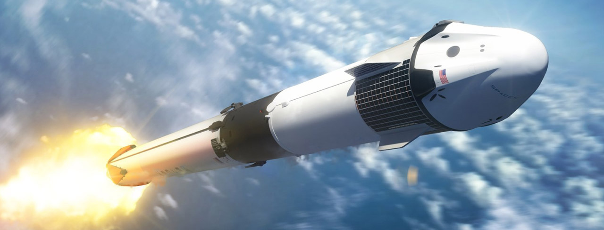
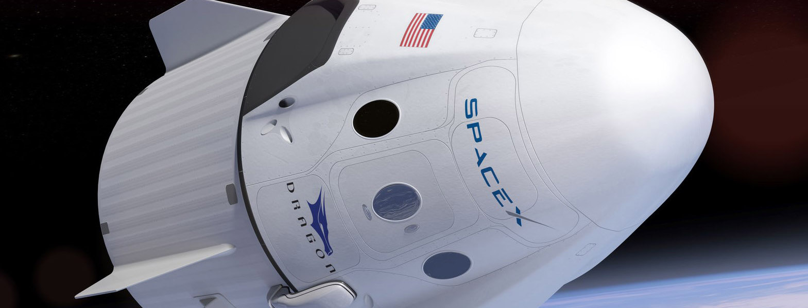
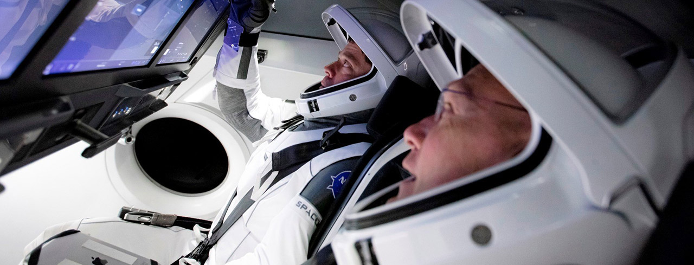

Connect With Us
Contact Us Today For More Info - 555.555.1212
WELCOME
ABOUT
MISSIONS
TEAM
CONTACT



SENDING HUMANS AND CARGO INTO SPACE
Missions
Mission
Capsule Number
Launch Date
Outcome
SpX–C1
C101
December 8 2010
Success
SpX–C2+
C102
May 22 2012
Success
CRS–1
C103
October 8 2012
Success; launch anomaly
CRS–2
C104
March 1 2013
Success; spacecraft anomaly
CRS–3
C105
April 18 2014
Success
CRS–4
C106
September 21 2014
Success
CRS–5
C107
April 14 2015
Success
CRS–6
C108
April 14 2015
Success
CRS–7
C109
June 28 2015
Failure
CRS–8
C110
April 8 2016
Success
CRS–9
C111
July 18 2016
Success
CRS–10
C112
February 19 2017
Success
CRS–11
C106.2
June 3 2017
Success
CRS–12
C113
August 14 2017
Success
CRS–13
C108.2
December 15 2017
Success
CRS–14
C110.2
April 2 2018
Success
CRS–15
C111.2
June 29 2018
Success
CRS–16
C112.2
December 2 2018
Success
CRS–17
C113.2
May 4 2019
Success
CRS–18
C108.3
July 24 2019
Success
CRS–19
C106.3
December 5 2019
Success
CRS–20
C112.3
March 7 2020
Success

Connect With Us
Contact Us Today For More Info - 555.555.1212